فصل نهم: LINQ Operators
این فصل به بررسی تکتک عملگرهای LINQ میپردازد. علاوه بر اینکه بهعنوان یک مرجع عمل میکند، دو بخش «Projecting» (در صفحه ۴۷۳) و «Joining» (در صفحه ۴۷۳) مفاهیم مهمی را پوشش میدهند:
- 📌 Projecting object hierarchies (ایجاد و نمایش سلسلهمراتب اشیاء)
- 📌 Joining با استفاده از
Select،SelectMany،JoinوGroupJoin - 📌 Query expressions with multiple range variables (عبارتهای کوئری با چند متغیر دامنهای)
🔤 مثال پایه
تمامی مثالهای این فصل فرض میکنند که یک آرایه از نامها تعریف شده است:
string[] names = { "Tom", "Dick", "Harry", "Mary", "Jay" };
مثالهایی که مربوط به پایگاهداده هستند فرض میکنند شیء زیر ساخته شده است:
var dbContext = new NutshellContext();
که کلاس NutshellContext به شکل زیر تعریف شده است:
public class NutshellContext : DbContext
{
public DbSet<Customer> Customers { get; set; }
public DbSet<Purchase> Purchases { get; set; }
protected override void OnModelCreating(ModelBuilder modelBuilder)
{
modelBuilder.Entity<Customer>(entity =>
{
entity.ToTable("Customer");
entity.Property(e => e.Name).IsRequired(); // ستون غیرقابل تهی
});
modelBuilder.Entity<Purchase>(entity =>
{
entity.ToTable("Purchase");
entity.Property(e => e.Date).IsRequired();
entity.Property(e => e.Description).IsRequired();
});
}
}
🧑💻 تعریف کلاسها
public class Customer
{
public int ID { get; set; }
public string Name { get; set; }
public virtual List<Purchase> Purchases { get; set; }
= new List<Purchase>();
}
public class Purchase
{
public int ID { get; set; }
public int? CustomerID { get; set; }
public DateTime Date { get; set; }
public string Description { get; set; }
public decimal Price { get; set; }
public virtual Customer Customer { get; set; }
}
🛠 ابزار LINQPad
تمامی مثالهای این فصل در LINQPad از پیش بارگذاری شدهاند، همراه با یک پایگاهداده نمونه که Schema مشابهی دارد.
📥 میتوانید LINQPad را از www.linqpad.net دانلود کنید.
🗄 تعریف جدولهای SQL Server متناظر
CREATE TABLE Customer (
ID int NOT NULL IDENTITY PRIMARY KEY,
Name nvarchar(30) NOT NULL
)
CREATE TABLE Purchase (
ID int NOT NULL IDENTITY PRIMARY KEY,
CustomerID int NOT NULL REFERENCES Customer(ID),
Date datetime NOT NULL,
Description nvarchar(30) NOT NULL,
Price decimal NOT NULL
)
🔎 مرور کلی (Overview)
در این بخش، یک مرور کلی بر عملگرهای استاندارد کوئری ارائه میدهیم. این عملگرها در سه دسته تقسیم میشوند:
- 📌 Sequence in, sequence out (sequence → sequence)
➝ یعنی ورودی یک دنباله (sequence) است و خروجی هم یک دنباله. - 📌 Sequence in, single element or scalar value out
➝ یعنی ورودی یک دنباله است اما خروجی فقط یک عنصر یا یک مقدار منفرد. - 📌 Nothing in, sequence out (generation methods)
➝ یعنی هیچ ورودی وجود ندارد اما خروجی یک دنباله تولید میشود.
ما ابتدا هر سه دسته را معرفی کرده و عملگرهای مربوط به هرکدام را بررسی میکنیم. سپس بهطور جداگانه سراغ تکتک عملگرها خواهیم رفت.
🔄 Sequence → Sequence
بیشتر عملگرهای LINQ در این دسته قرار میگیرند. آنها یک یا چند دنباله را بهعنوان ورودی میگیرند و در خروجی یک دنباله تولید میکنند.
📊 شکل ۹-۱ عملگرهایی را نشان میدهد که ساختار دنبالهها را تغییر میدهند.

📖 عملگرهای LINQ – دستهبندیها
در این بخش، عملگرهای LINQ را بر اساس نوع ورودی و خروجی مرور میکنیم. هر دسته با مثالها و توضیح کوتاه معرفی میشود.
🔍 Filtering (فیلتر کردن)
ورودی: IEnumerable<TSource>
خروجی: IEnumerable<TSource>
🔹 وظیفه: برگرداندن یک زیرمجموعه از عناصر اصلی.
📌 عملگرها:
Where, Take, TakeLast, TakeWhile, Skip, SkipLast, SkipWhile,
Distinct, DistinctBy
🎨 Projecting (تبدیل/نمایش)
ورودی: IEnumerable<TSource>
خروجی: IEnumerable<TResult>
🔹 وظیفه: تغییر شکل هر عنصر با استفاده از یک lambda function.
SelectManyدنبالههای تو در تو (nested sequences) را مسطحسازی (flatten) میکند.SelectوSelectManyمیتوانند انواع مختلف Join (مانند inner join, left outer join, cross join, non-equi join) را با EF Core انجام دهند.
📌 عملگرها:
Select, SelectMany
🔗 Joining (اتصال/ترکیب)
ورودی:
IEnumerable<TOuter>, IEnumerable<TInner>
خروجی:
IEnumerable<TResult>
🔹 وظیفه: ترکیب عناصر یک دنباله با دنبالهای دیگر.
JoinوGroupJoinبرای کارایی بهتر در کوئریهای محلی طراحی شدهاند و از inner join و left outer join پشتیبانی میکنند.Zipدو دنباله را همزمان پیمایش کرده و روی هر جفت عنصر یک تابع اعمال میکند.
📌 عملگرها:
Join, GroupJoin, Zip
📑 Ordering (مرتبسازی)
ورودی: IEnumerable<TSource>
خروجی: IOrderedEnumerable<TSource>
🔹 وظیفه: بازگرداندن یک دنباله با ترتیب جدید.
📌 عملگرها:
OrderBy, OrderByDescending, ThenBy, ThenByDescending, Reverse
🗂 Grouping (گروهبندی)
ورودی: IEnumerable<TSource>
خروجی:
IEnumerable<IGrouping<TKey,TElement>>- یا
IEnumerable<TElement[]>
🔹 وظیفه: تقسیم یک دنباله به زیردنبالهها.
📌 عملگرها:
GroupBy, Chunk
🔀 Set Operators (عملگرهای مجموعهای)
ورودی:
IEnumerable<TSource>, IEnumerable<TSource>
خروجی:
IEnumerable<TSource>
🔹 وظیفه: گرفتن دو دنباله همنوع و برگرداندن اشتراک، اجتماع یا تفاوت آنها.
📌 عملگرها:
Concat, Union, UnionBy, Intersect, IntersectBy, Except, ExceptBy
🔄 Conversion Methods (تبدیل)
🛠 Import
ورودی: IEnumerable
خروجی: IEnumerable<TResult>
📌 عملگرها:
OfType, Cast
📤 Export
ورودی: IEnumerable<TSource>
خروجی: یک آرایه، لیست، دیکشنری، Lookup یا دنباله
📌 عملگرها:
ToArray, ToList, ToDictionary, ToLookup, AsEnumerable, AsQueryable
🎯 Sequence → Element or Value
🔹 Element Operators (انتخاب عنصر)
ورودی: IEnumerable<TSource>
خروجی: TSource
📌 عملگرها:
First, FirstOrDefault, Last, LastOrDefault,
Single, SingleOrDefault, ElementAt, ElementAtOrDefault,
MinBy, MaxBy, DefaultIfEmpty
🔹 Aggregation Methods (تجمیع)
ورودی: IEnumerable<TSource>
خروجی: یک مقدار منفرد (scalar)
📌 وظیفه: انجام محاسبه روی یک دنباله و بازگرداندن یک مقدار عددی یا مشابه آن.
📌 عملگرها:
Aggregate, Average, Count, LongCount, Sum, Max, Min
🔹 Quantifiers (کوانتیفایرها)
ورودی: IEnumerable<TSource>
خروجی: bool
📌 وظیفه: برگرداندن نتیجه true/false بهعنوان یک تجمیع.
📌 عملگرها:
All, Any, Contains, SequenceEqual
🌀 Void → Sequence
🔹 Generation Methods (تولید)
ورودی: void
خروجی: IEnumerable<TResult>
📌 وظیفه: ساخت یک دنباله ساده از صفر.
📌 عملگرها:
Empty, Range, Repeat

📖 نکته درباره ستون «SQL equivalents»
در جدولهای مرجع این فصل، ستون «SQL equivalents» لزوماً همان چیزی نیست که یک پیادهسازی IQueryable مثل EF Core تولید میکند.
بلکه این ستون نشان میدهد اگر خودتان میخواستید معادل آن کوئری را به زبان SQL بنویسید، معمولاً از چه چیزی استفاده میکردید.
- اگر معادل سادهای برای آن وجود نداشته باشد، ستون خالی رها میشود.
- اگر هیچ معادلی در SQL وجود نداشته باشد، عبارت «Exception thrown» درج میشود.
🧑💻 پیادهسازی Enumerable
وقتی کد پیادهسازی برای Enumerable نشان داده میشود، بررسی موارد زیر در آن حذف شدهاند:
- بررسی آرگومانهای null
- بررسی indexing predicates
🔍 درباره متدهای Filtering
در هر یک از متدهای Filtering، همیشه خروجی شامل همان تعداد یا کمتر از عناصری است که در ورودی داشتید.
⚠️ هیچوقت نمیتوانید عناصر بیشتری از آنچه وارد کردهاید به دست بیاورید!
علاوه بر این، عناصری که در خروجی دریافت میکنید تبدیل یا تغییر شکل داده نمیشوند؛ آنها دقیقاً همان عناصری هستند که در ورودی وجود داشتند.
📝 Where

📖 Where در LINQ
⚠️ محدودیتها
- ❌ استفاده از
Whereدر LINQ to SQL و Entity Framework (EF Core) دارای محدودیتهایی است (برخی سناریوها پشتیبانی نمیشوند).
📝 سینتکس کوئری
where bool-expression
🔧 پیادهسازی Enumerable.Where
نسخه داخلی Enumerable.Where (بدون بررسی null) معادل کدی شبیه زیر است:
public static IEnumerable<TSource> Where<TSource>(
this IEnumerable<TSource> source,
Func<TSource, bool> predicate)
{
foreach (TSource element in source)
if (predicate(element))
yield return element;
}
📌 توضیح
Where عناصری از دنباله ورودی را برمیگرداند که شرط دادهشده (predicate) را برآورده میکنند.
✨ مثال ساده
string[] names = { "Tom", "Dick", "Harry", "Mary", "Jay" };
IEnumerable<string> query = names.Where(name => name.EndsWith("y"));
// خروجی:
// Harry
// Mary
// Jay
🔹 معادل در Query Syntax:
IEnumerable<string> query =
from n in names
where n.EndsWith("y")
select n;
🌀 چند شرط Where در یک کوئری
یک عبارت where میتواند چند بار در کوئری ظاهر شود و با let, orderby, یا join ترکیب شود:
from n in names
where n.Length > 3
let u = n.ToUpper()
where u.EndsWith("Y")
select u;
// خروجی:
// HARRY
// MARY
🔸 قوانین scoping استاندارد #C اعمال میشوند. یعنی نمیتوانید قبل از تعریف یک متغیر (با range variable یا let) به آن ارجاع دهید.
🔢 Indexed Filtering (فیلترگذاری بر اساس ایندکس)
Where میتواند بهصورت اختیاری آرگومان دوم از نوع int دریافت کند (نمایانگر موقعیت عنصر در دنباله). این ویژگی اجازه میدهد تصمیمگیری براساس موقعیت انجام شود.
IEnumerable<string> query = names.Where((n, i) => i % 2 == 0);
// خروجی:
// Tom
// Harry
// Jay
⚠️ در EF Core استفاده از این قابلیت باعث Exception میشود.
🔍 مقایسه با LIKE در EF Core
متدهای زیر در رشتهها به SQL LIKE ترجمه میشوند:
ContainsStartsWithEndsWith
مثال:
c.Name.Contains("abc")
به SQL معادل زیر تبدیل میشود:
customer.Name LIKE '%abc%'
(در واقع نسخه پارامتریشده ساخته میشود، نه رشته مستقیم.)
🔹 برای مقایسه با ستون دیگر باید از متد EF.Functions.Like استفاده کنید:
where EF.Functions.Like(c.Description, "%" + c.Name + "%")
این متد امکان مقایسههای پیچیدهتر را هم میدهد، مثل:
LIKE 'abc%def%'
🔠 مقایسه رشتهای با < و > در EF Core
برای مقایسه ترتیبی رشتهها از متد string.CompareTo استفاده کنید:
dbContext.Purchases
.Where(p => p.Description.CompareTo("C") < 0);
📌 این کد به عملگرهای < و > در SQL نگاشت میشود.
🗂 استفاده از IN در EF Core
در EF Core میتوانید Contains را روی یک مجموعه محلی استفاده کنید:
string[] chosenOnes = { "Tom", "Jay" };
from c in dbContext.Customers
where chosenOnes.Contains(c.Name)
select c;
معادل SQL:
WHERE customer.Name IN ("Tom", "Jay")
⚠️ اگر مجموعه محلی آرایهای از entity یا نوع غیر scalar باشد، EF Core ممکن است بهجای آن EXISTS تولید کند.
⏩ عملگرهای بعدی
TakeTakeLastSkipSkipLast
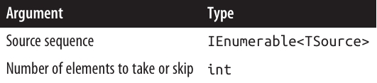
📖 Take و Skip در LINQ
📝 توضیح کلی
- 🔹 متد
Takeاولین n عنصر از دنباله رو برمیگردونه و بقیه رو نادیده میگیره. - 🔹 متد
Skipاولین n عنصر رو حذف میکنه و بقیه عناصر رو برمیگردونه.
این دو متد معمولاً با هم استفاده میشن، مخصوصاً وقتی میخوایم صفحهبندی (Paging) در یک اپلیکیشن وب رو پیادهسازی کنیم.
🌐 مثال کاربردی (Paging در EF Core)
فرض کن کاربر توی دیتابیس کتابها دنبال عبارت "mercury" میگرده و ۱۰۰ نتیجه پیدا میشه.
📌 برای گرفتن ۲۰ نتیجه اول:
IQueryable<Book> query = dbContext.Books
.Where(b => b.Title.Contains("mercury"))
.OrderBy(b => b.Title)
.Take(20);
📌 برای گرفتن کتابهای شماره ۲۱ تا ۴۰:
IQueryable<Book> query = dbContext.Books
.Where(b => b.Title.Contains("mercury"))
.OrderBy(b => b.Title)
.Skip(20)
.Take(20);
⚙️ نحوه ترجمه در SQL
در EF Core:
- در SQL Server 2005 به تابع
ROW_NUMBERترجمه میشه. - در نسخههای قدیمیتر SQL Server به زیرکوئری TOP n نگاشت میشه.
🔄 متدهای TakeLast و SkipLast
TakeLast(n)→ آخرین n عنصر رو برمیگردونه.SkipLast(n)→ آخرین n عنصر رو حذف میکنه.
🚀 قابلیت جدید از .NET 6
از نسخه .NET 6، متد Take یک نسخه overload جدید داره که متغیر Range رو قبول میکنه. این نسخه میتونه جایگزین تمام چهار متد بشه.
📌 مثالها:
Take(5..)
// معادل Skip(5)
Take(..^5)
// معادل SkipLast(5)
یعنی میتونی خیلی تمیزتر و کوتاهتر کد بزنی ✨
⏩ عملگرهای بعدی
TakeWhileSkipWhile

🔹 TakeWhile و SkipWhile
⚙️ TakeWhile
TakeWhile عناصر دنباله ورودی را به ترتیب پیمایش میکند و هر عنصر را تا زمانی که شرط دادهشده true باشد برمیگرداند.
به محض اینکه شرط false شود، بقیه عناصر نادیده گرفته میشوند.
int[] numbers = { 3, 5, 2, 234, 4, 1 };
var takeWhileSmall = numbers.TakeWhile(n => n < 100); // خروجی: { 3, 5, 2 }
⚙️ SkipWhile
SkipWhile هم دنباله ورودی را پیمایش میکند، ولی عناصر را تا زمانی که شرط true باشد نادیده میگیرد.
بعد از اولین عنصری که شرط false شد، بقیه عناصر برگردانده میشوند.
int[] numbers = { 3, 5, 2, 234, 4, 1 };
var skipWhileSmall = numbers.SkipWhile(n => n < 100); // خروجی: { 234, 4, 1 }
⚠️ توجه:
TakeWhile و SkipWhile هیچ معادل SQL ندارند و در کوئریهای EF Core استفاده از آنها باعث Exception میشود.
🔹 Distinct و DistinctBy
✅ Distinct
Distinct دنباله ورودی را بدون تکراریها برمیگرداند.
میتوانید custom equality comparer هم به آن بدهید.
char[] distinctLetters = "HelloWorld".Distinct().ToArray();
string s = new string(distinctLetters); // خروجی: "HeloWrd"
میتوانیم مستقیماً متدهای LINQ را روی
stringصدا بزنیم، چونstringپیادهسازیکنندهIEnumerable<char>است.
✅ DistinctBy
- معرفی شده در .NET 6
- امکان مشخص کردن یک key selector قبل از مقایسه تساوی را فراهم میکند.
مثال:
new[] { 1.0, 1.1, 2.0, 2.1, 3.0, 3.1 }
.DistinctBy(n => Math.Round(n, 0)); // خروجی: { 1, 2, 3 }
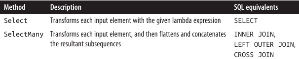
🎨 Select و SelectMany در LINQ
⚙️ توضیح کلی
وقتی روی پایگاه داده کوئری میزنیم، Select و SelectMany انعطافپذیرترین ابزارها برای انجام join هستند.
اما برای کوئریهای محلی (Local queries)، Join و GroupJoin کارآمدترین و سریعترین ابزارها برای join محسوب میشوند.
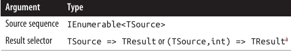
Select
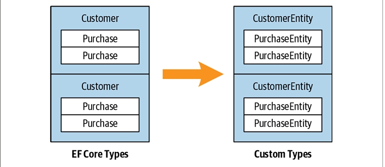
⚠️ محدودیت EF Core
- ❌ استفاده از
Selectبه عنوان subquery پیچیده یا indexed projection در EF Core محدودیت دارد و برخی سناریوها ممکن است پشتیبانی نشود.
📝 سینتکس کوئری
select projection-expression
🔧 پیادهسازی Enumerable
نسخه داخلی Enumerable.Select به شکل زیر است:
public static IEnumerable<TResult> Select<TSource,TResult>(
this IEnumerable<TSource> source,
Func<TSource,TResult> selector)
{
foreach (TSource element in source)
yield return selector(element);
}
🔹 توضیح کلی
- با
Selectهمیشه تعداد عناصر خروجی برابر با تعداد عناصر ورودی است. - هر عنصر میتواند با lambda function به هر شکل دلخواه تبدیل شود.
🔹 مثال پایهای: گرفتن نام فونتها
IEnumerable<string> query = from f in FontFamily.Families
select f.Name;
foreach (string name in query)
Console.WriteLine(name);
🔹 معادل Lambda Syntax:
IEnumerable<string> query = FontFamily.Families.Select(f => f.Name);
🔹 پروژه کردن به انواع ناشناس (Anonymous Types)
var query = from f in FontFamily.Families
select new { f.Name, LineSpacing = f.GetLineSpacing(FontStyle.Bold) };
- گاهی اوقات projection بدون هیچ تغییر خاصی انجام میشود، فقط برای اینکه کوئری با
selectیاgroupپایان یابد.
مثال: انتخاب فونتهایی که strikeout را پشتیبانی میکنند:
IEnumerable<FontFamily> query =
from f in FontFamily.Families
where f.IsStyleAvailable(FontStyle.Strikeout)
select f;
foreach (FontFamily ff in query)
Console.WriteLine(ff.Name);
در این موارد، کامپایلر هنگام تبدیل به Fluent Syntax، projection را حذف میکند.
🔹 Indexed Projection
selectorمیتواند آرگومان اختیاری دوم از نوع int بگیرد که نمایانگر موقعیت عنصر در دنباله است.- ⚠️ این قابلیت فقط در کوئریهای محلی کار میکند.
string[] names = { "Tom", "Dick", "Harry", "Mary", "Jay" };
IEnumerable<string> query = names.Select((s, i) => i + "=" + s);
// خروجی: { "0=Tom", "1=Dick", "2=Harry", "3=Mary", "4=Jay" }
🔹 Subqueries و Object Hierarchies
- میتوان یک subquery را در
Selectجای داد تا ساختار شیء (Object Hierarchy) بسازیم. - مثال: دریافت هر دایرکتوری در مسیر
Path.GetTempPath()همراه با لیست فایلهای آن:
string tempPath = Path.GetTempPath();
DirectoryInfo[] dirs = new DirectoryInfo(tempPath).GetDirectories();
var query = from d in dirs
where (d.Attributes & FileAttributes.System) == 0
select new
{
DirectoryName = d.FullName,
Created = d.CreationTime,
Files = from f in d.GetFiles()
where (f.Attributes & FileAttributes.Hidden) == 0
select new { FileName = f.Name, f.Length }
};
foreach (var dirFiles in query)
{
Console.WriteLine("Directory: " + dirFiles.DirectoryName);
foreach (var file in dirFiles.Files)
Console.WriteLine(" " + file.FileName + " Len: " + file.Length);
}
- بخش داخلی این کوئری یک correlated subquery است، چون به شیء
dدر کوئری خارجی ارجاع میدهد. - یک subquery در
Selectامکان نگاشت یک هرمشی شیء (Object Hierarchy) به هرمشی دیگر یا نگاشت Relational Object Model به Hierarchical Object Model را میدهد.
🔹 Deferred Execution در Local Queries
- در کوئریهای محلی، subquery داخل
Selectباعث double-deferred execution میشود. - در مثال بالا، فایلها تا زمانی که
foreachداخلی اجرا نشود، فیلتر یا پروژه نمیشوند.
🌀 Subqueries و Joins در EF Core
🔹 Subquery Projections در EF Core
- Projection با subquery در EF Core به خوبی کار میکند و میتواند جایگزین SQL-style joins باشد.
- مثال: دریافت نام هر مشتری به همراه خریدهای با ارزش بالای ۱۰۰۰:
var query =
from c in dbContext.Customers
select new {
c.Name,
Purchases = (
from p in dbContext.Purchases
where p.CustomerID == c.ID && p.Price > 1000
select new { p.Description, p.Price }
).ToList()
};
foreach (var namePurchases in query)
{
Console.WriteLine("Customer: " + namePurchases.Name);
foreach (var purchaseDetail in namePurchases.Purchases)
Console.WriteLine(" - $$$: " + purchaseDetail.Price);
}
⚠️ دقت کنید که استفاده از
ToListدر subquery ضروری است، زیرا EF Core 3 نمیتواند queryable بسازد اگر subquery مستقیماً بهDbContextارجاع دهد. این محدودیت ممکن است در نسخههای بعدی EF Core برطرف شود.
🔹 مزیت این سبک
-
این نوع کوئری برای interpreted queries مناسب است.
-
کوئری خارجی و subquery به صورت یک واحد پردازش میشوند و از round-tripping اضافی جلوگیری میکنند.
-
⚠️ در کوئریهای محلی (Local queries) این روش غیر بهینه است، چون تمام ترکیبهای عناصر خارجی و داخلی باید پیمایش شوند.
-
جایگزین بهینه برای Local queries: استفاده از Join یا GroupJoin.
🔹 نگاشت دادههای سلسلهمراتبی
-
این کوئری اشیاء دو مجموعه متفاوت را همتراز میکند و میتوان آن را یک نوع join در نظر گرفت.
-
تفاوت با join سنتی SQL:
- خروجی تخت (flat) نیست، بلکه دادههای رابطهای به دادههای سلسلهمراتبی نگاشت میشوند.
🔹 استفاده از Navigation Property
مثال سادهتر با استفاده از Navigation Property Purchases در Customer:
from c in dbContext.Customers
select new
{
c.Name,
Purchases = from p in c.Purchases // Purchases نوع List<Purchase> است
where p.Price > 1000
select new { p.Description, p.Price }
};
در EF Core 3، هنگام استفاده از Navigation Property نیازی به ToList نیست.
- هر دو کوئری مانند left outer join در SQL هستند: همه مشتریها در enumeration بیرونی لحاظ میشوند، حتی اگر خریدی نداشته باشند.
🔹 شبیهسازی Inner Join
- برای حذف مشتریهایی که خرید با ارزش بالا ندارند، میتوان شرط اضافه کرد:
from c in dbContext.Customers
where c.Purchases.Any(p => p.Price > 1000)
select new {
c.Name,
Purchases = from p in c.Purchases
where p.Price > 1000
select new { p.Description, p.Price }
};
-
⚠️ این روش کمی تکراری است (Price > 1000 دو بار نوشته میشود).
-
با استفاده از
letمیتوان تکرار را حذف کرد:
from c in dbContext.Customers
let highValueP = from p in c.Purchases
where p.Price > 1000
select new { p.Description, p.Price }
where highValueP.Any()
select new { c.Name, Purchases = highValueP };
- این سبک انعطافپذیر است؛ برای مثال با تغییر
Any()بهCount()میتوان فقط مشتریهایی با حداقل دو خرید با ارزش بالا را گرفت:
where highValueP.Count() >= 2
select new { c.Name, Purchases = highValueP };
🔹 Projection به Types مشخص
- تا اینجا از Anonymous Types استفاده شد.
- میتوان کلاسهای معمولی (Named Classes) نیز ساخت و با object initializer پر کرد.
- این کلاسها میتوانند منطق سفارشی داشته باشند و بین متدها و Assemblyها منتقل شوند.
- نمونه معمول: Custom Business Entity / DTO
IQueryable<CustomerEntity> query =
from c in dbContext.Customers
select new CustomerEntity
{
Name = c.Name,
Purchases = (
from p in c.Purchases
where p.Price > 1000
select new PurchaseEntity
{
Description = p.Description,
Value = p.Price
}
).ToList()
};
// اجرای کوئری و تبدیل خروجی به List
List<CustomerEntity> result = query.ToList();
کلاسهای DTO معمولاً هیچ منطق تجاری ندارند و صرفاً برای انتقال داده بین لایهها یا سیستمها استفاده میشوند.
🔹 نکته کلیدی
- تا اینجا نیازی به Join یا SelectMany نداشتیم.
- دلیل: ساختار سلسلهمراتبی دادهها حفظ شده، برخلاف SQL که معمولاً دادهها را flatten میکند.

🌊 SelectMany در LINQ
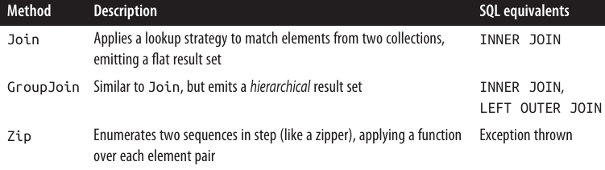
🌊 SelectMany در LINQ – جزئیات و مثالها
🔹 Query Syntax
from identifier1 in enumerable-expression1
from identifier2 in enumerable-expression2
...
- در query syntax، وقتی از یک
fromاضافی استفاده میکنید، در واقع SelectMany فراخوانی میشود.
🔹 Enumerable Implementation
public static IEnumerable<TResult> SelectMany<TSource,TResult>
(IEnumerable<TSource> source,
Func<TSource,IEnumerable<TResult>> selector)
{
foreach (TSource element in source)
foreach (TResult subElement in selector(element))
yield return subElement;
}
-
SelectManyهمه subsequenceها را به یک دنبالهی تخت (flat) ترکیب میکند. -
تفاوت با Select:
Select: برای هر عنصر ورودی، دقیقا یک عنصر خروجی تولید میکند.SelectMany: برای هر عنصر ورودی، ۰ تا n عنصر خروجی تولید میکند.- n عناصر خروجی از یک subsequence یا child sequence که توسط lambda expression صادر میشود، حاصل میشوند.
🔹 مثال ساده: flatten کردن کلمات از fullNames
string[] fullNames = { "Anne Williams", "John Fred Smith", "Sue Green" };
IEnumerable<string> query = fullNames.SelectMany(name => name.Split());
foreach (string name in query)
Console.Write(name + "|");
// خروجی: Anne|Williams|John|Fred|Smith|Sue|Green|
- اگر به جای
SelectManyازSelectاستفاده کنید، خروجی سلسلهمراتبی (nested arrays) خواهد بود و نیاز بهforeachتو در تو دارید:
IEnumerable<string[]> query = fullNames.Select(name => name.Split());
foreach (string[] stringArray in query)
foreach (string name in stringArray)
Console.Write(name + "|");
- مزیت
SelectManyاین است که یک دنبالهی تخت (flat) تولید میکند.
🔹 Query Syntax و چند متغیره بودن
IEnumerable<string> query =
from fullName in fullNames
from name in fullName.Split() // ترجمه به SelectMany
select name;
- متغیر جدید
nameمعرفی میشود، اما متغیر قدیمیfullNameهمچنان در دسترس است. - میتوانیم از هر دو در projection نهایی استفاده کنیم:
IEnumerable<string> query =
from fullName in fullNames
from name in fullName.Split()
select name + " came from " + fullName;
- خروجی نمونه:
Anne came from Anne Williams
Williams came from Anne Williams
John came from John Fred Smith
...
🔹 مشکل در Fluent Syntax
- وقتی
SelectManyرا مستقیماً در fluent syntax بنویسیم و بخواهیم هر دو متغیر outer و inner را داشته باشیم، مشکل ایجاد میشود. - راهحل: هر child element را در یک anonymous type بستهبندی کنیم که outer element را هم نگه دارد:
from fullName in fullNames
from x in fullName.Split().Select(name => new { name, fullName })
orderby x.fullName, x.name
select x.name + " came from " + x.fullName;
- معادل Fluent Syntax:
IEnumerable<string> query = fullNames
.SelectMany(fName => fName.Split()
.Select(name => new { name, fName }))
.OrderBy(x => x.fName)
.ThenBy(x => x.name)
.Select(x => x.name + " came from " + x.fName);
- 🔹 نکته: این تکنیک مشابه resolve کردن let clause در query syntax است.
🤔 فکر کردن به سبک Query Syntax در LINQ
🔹 چرا query syntax مفید است؟
- وقتی به چند متغیر دامنه (range variables) نیاز دارید، query syntax کمک میکند تا مستقیم در همان چارچوب فکر کنید.
- دو الگوی اصلی برای استفاده از generatorهای اضافی وجود دارد:
1️⃣ گسترش و flatten کردن subsequenceها
- با فراخوانی یک property یا method روی یک متغیر دامنه موجود در generator اضافی، میتوان subsequenceها را گسترش داد.
from fullName in fullNames
from name in fullName.Split()
- مثال مشابه در EF Core:
IEnumerable<string> query =
from c in dbContext.Customers
from p in c.Purchases
select c.Name + " bought a " + p.Description;
- خروجی نمونه:
Tom bought a Bike
Tom bought a Holiday
Dick bought a Phone
Harry bought a Car
...
- 🔹 هر مشتری به یک subsequence از خریدها تبدیل شده است.
2️⃣ تولید Cartesian Product یا Cross Join
- هر عنصر از یک دنباله با هر عنصر دنباله دیگر ترکیب میشود.
int[] numbers = { 1, 2, 3 };
string[] letters = { "a", "b" };
IEnumerable<string> query =
from n in numbers
from l in letters
select n.ToString() + l;
// خروجی: { "1a", "1b", "2a", "2b", "3a", "3b" }
- این الگو پایهای برای SelectMany-style joins است.
🔹 Join کردن با SelectMany
- میتوان با اضافه کردن شرط فیلتر روی نتیجه cross product، join ساخت:
string[] players = { "Tom", "Jay", "Mary" };
IEnumerable<string> query =
from name1 in players
from name2 in players
where name1.CompareTo(name2) < 0
orderby name1, name2
select name1 + " vs " + name2;
// خروجی: { "Jay vs Mary", "Jay vs Tom", "Mary vs Tom" }
- 🔹 این یک non-equi join است چون شرط join از مقایسه نابرابری استفاده میکند.
🔹 SelectMany در EF Core
- میتواند cross joins, non-equi joins, inner joins, left outer joins انجام دهد.
- میتوان از آن با associations از قبل تعریفشده یا روابط ad hoc استفاده کرد.
- تفاوت با Select: SelectMany دنبالهای تخت (flat) برمیگرداند، نه سلسلهمراتبی.
مثال Cross Join
var query =
from c in dbContext.Customers
from p in dbContext.Purchases
select c.Name + " might have bought a " + p.Description;
مثال Equi-Join (SQL-style)
var query =
from c in dbContext.Customers
from p in dbContext.Purchases
where c.ID == p.CustomerID
select c.Name + " bought a " + p.Description;
- 🔹 این ترجمه خوبی به SQL دارد و اجرای outer joins نیز با تغییرات کوچک ممکن است.
🔹 استفاده از Collection Navigation Properties
- میتوان به جای فیلتر روی cross product، subcollectionها را گسترش داد:
from c in dbContext.Customers
from p in c.Purchases
select new { c.Name, p.Description };
- مزیت: نیازی به شرط join نیست و از فیلتر روی cross product خلاص میشویم.
🔹 اضافه کردن فیلترها
- مثال: مشتریانی که نامشان با "T" شروع میشود:
from c in dbContext.Customers
where c.Name.StartsWith("T")
from p in c.Purchases
select new { c.Name, p.Description };
- در EF Core، جابجایی where clause یک خط پایینتر هم کار میکند.
- در local queries، بهتر است ابتدا فیلتر کنید و بعد join کنید.
🔹 اضافه کردن جداول فرزند
- مثال: هر خرید دارای چند PurchaseItem است:
from c in dbContext.Customers
from p in c.Purchases
from pi in p.PurchaseItems
select new { c.Name, p.Description, pi.Detail };
- هر
fromجدید یک child table اضافه میکند.
🔹 استفاده از Navigation Property والد
- برای دسترسی به دادههای والد، نیازی به from جدید نیست:
from c in dbContext.Customers
select new { Name = c.Name, SalesPerson = c.SalesPerson.Name };
- 🔹 اینجا SelectMany لازم نیست چون subcollection برای flatten کردن وجود ندارد.
↔️ Outer Joins با SelectMany در LINQ و EF Core
🔹 مثال اولیه با Subquery
- یک Select subquery مشابه left outer join رفتار میکند:
from c in dbContext.Customers
select new {
c.Name,
Purchases = from p in c.Purchases
where p.Price > 1000
select new { p.Description, p.Price }
};
- 🔹 در اینجا هر مشتری در خروجی ظاهر میشود، حتی اگر خریدی نداشته باشد.
- نتیجه یک hierarchical result set است.
🔹 مشکل وقتی SelectMany استفاده شود
- اگر بخواهیم خروجی flat داشته باشیم:
from c in dbContext.Customers
from p in c.Purchases
where p.Price > 1000
select new { c.Name, p.Description, p.Price };
- 🔹 اینجا join به inner join تبدیل میشود:
مشتریان فقط زمانی ظاهر میشوند که یک یا چند خرید با ارزش بالا داشته باشند.
🔹 راه حل برای Left Outer Join تخت
- از
DefaultIfEmpty()روی inner sequence استفاده میکنیم. - این متد اگر sequence خالی باشد، یک عنصر null تولید میکند:
from c in dbContext.Customers
from p in c.Purchases.DefaultIfEmpty()
select new { c.Name, p.Description, Price = (decimal?)p.Price };
- ✅ EF Core همه مشتریان را برمیگرداند، حتی اگر خریدی نداشته باشند.
- ⚠️ در local query، اگر p null باشد، دسترسی به
p.Descriptionیاp.Priceباعث NullReferenceException میشود.
🔹 نسخه مقاوم (Robust)
from c in dbContext.Customers
from p in c.Purchases.DefaultIfEmpty()
select new {
c.Name,
Descript = p == null ? null : p.Description,
Price = p == null ? (decimal?) null : p.Price
};
- این نسخه در هر دو سناریو (EF Core و local query) امن است.
🔹 اعمال فیلتر قیمت
- نمیتوانیم
whereرا بعد از DefaultIfEmpty قرار دهیم، چون فیلتر بعد از اضافه کردن null اجرا میشود. - راه حل: فیلتر را قبل از DefaultIfEmpty با یک subquery اعمال کنیم:
from c in dbContext.Customers
from p in c.Purchases.Where(p => p.Price > 1000).DefaultIfEmpty()
select new {
c.Name,
Descript = p == null ? null : p.Description,
Price = p == null ? (decimal?) null : p.Price
};
- ✅ EF Core این را به left outer join ترجمه میکند.
- این یک الگوی موثر برای نوشتن چنین queryهایی است.
اگر به نوشتن outer join در SQL عادت داری، ممکنه وسوسه بشی که گزینهی سادهتر یعنی Select subquery رو نادیده بگیری و به سمت روش تخت و پیچیدهی SQL-centric بری که آشناتر به نظر میرسه.
✅ واقعیت اینه که hierarchical result set که از یک Select subquery به دست میاد، اغلب برای queryهای سبک outer join بهتره، چون نیازی به مدیریت nullهای اضافی نداری و کار تمیزتر انجام میشه.
Joining

✨ نحوۀ Query در LINQ
from outer-var in outer-enumerable
join inner-var in inner-enumerable on outer-key-expr equals inner-key-expr
[ into identifier ]
📖 مرور کلی (Overview)
🔹 Join و GroupJoin دو توالی ورودی (input sequences) را به یک توالی خروجی (output sequence) ترکیب میکنند.
- Join خروجی مسطح (flat output) تولید میکند.
- GroupJoin خروجی سلسلهمراتبی (hierarchical output) تولید میکند.
✨ Join و GroupJoin یک راهبرد جایگزین برای Select و SelectMany ارائه میدهند.
✅ مزیت Join و GroupJoin این است که آنها بهشکل کارآمد روی مجموعههای محلی (local in-memory collections) اجرا میشوند، چون ابتدا توالی درونی (inner sequence) را داخل یک lookup کلیددار (keyed lookup) بارگذاری میکنند و به این ترتیب از نیاز به پیمایش (enumerate) مکرر روی هر عنصر داخلی جلوگیری میکنند.
⚠️ عیب آنها این است که تنها معادل inner join و left outer join را ارائه میدهند؛ برای cross join و non-equi join همچنان باید از Select/SelectMany استفاده کرد.
📌 در کوئریهای EF Core، استفاده از Join و GroupJoin مزیت خاصی نسبت به Select و SelectMany ندارد.
📊 جدول ۹-۱ تفاوتهای میان هر یک از راهبردهای join را خلاصه میکند.
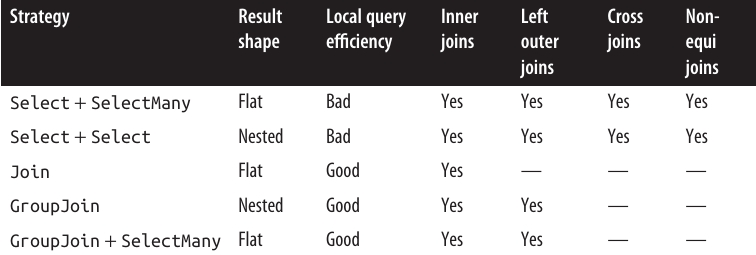
🔗 Join
اپراتور Join یک inner join انجام میدهد و یک توالی خروجی مسطح (flat output sequence) تولید میکند.
🔹 مثال زیر، همۀ مشتریان (customers) را همراه با خریدهایشان (purchases) فهرست میکند، بدون اینکه از ویژگی ناوبری (navigation property) استفاده شود:
IQueryable<string> query =
from c in dbContext.Customers
join p in dbContext.Purchases on c.ID equals p.CustomerID
select c.Name + " bought a " + p.Description;
📋 نتایج دقیقاً همان چیزی است که با یک کوئری به سبک SelectMany به دست میآید:
Tom bought a Bike
Tom bought a Holiday
Dick bought a Phone
Harry bought a Car
⚡ مزیت Join در برابر SelectMany
برای دیدن مزیت Join در مقایسه با SelectMany، باید کوئری را به حالت محلی (local query) تبدیل کنیم.
اول، تمام مشتریان و خریدها را در آرایهها کپی میکنیم و سپس روی آرایهها کوئری میزنیم:
Customer[] customers = dbContext.Customers.ToArray();
Purchase[] purchases = dbContext.Purchases.ToArray();
var slowQuery = from c in customers
from p in purchases
where c.ID == p.CustomerID
select c.Name + " bought a " + p.Description;
var fastQuery = from c in customers
join p in purchases on c.ID equals p.CustomerID
select c.Name + " bought a " + p.Description;
هر دو کوئری نتیجه یکسانی برمیگردانند، اما کوئری با Join بهمراتب سریعتر است. دلیلش این است که پیادهسازی در Enumerable، مجموعه داخلی (purchases) را ابتدا بهصورت یک keyed lookup بارگذاری میکند.
📝 نحوۀ کلی Join
نحوۀ نوشتن join بهطور کلی به شکل زیر است:
join inner-var in inner-sequence on outer-key-expr equals inner-key-expr
اپراتورهای Join در LINQ بین توالی بیرونی (outer sequence) و توالی درونی (inner sequence) تمایز قائل میشوند.
- ✅ outer sequence → همان توالی ورودی است (در این مثال، customers).
- ✅ inner sequence → مجموعه جدیدی است که معرفی میکنید (در این مثال، purchases).
📌 Join فقط inner join انجام میدهد؛ یعنی مشتریانی که خریدی ندارند از خروجی حذف میشوند.
در inner join میتوانید توالی بیرونی و درونی را با هم جابهجا کنید و همچنان نتیجه یکسانی بگیرید:
from p in purchases // p حالا outer است
join c in customers on p.CustomerID equals c.ID // c حالا inner است
...
🧩 چندین Join در یک کوئری
شما میتوانید چندین عبارت join در یک کوئری اضافه کنید.
مثلاً اگر هر خرید (purchase) یک یا چند آیتم خرید (purchase items) داشته باشد:
from c in customers
join p in purchases on c.ID equals p.CustomerID // first join
join pi in purchaseItems on p.ID equals pi.PurchaseID // second join
...
📌 در اینجا، purchases در اولین join بهعنوان inner sequence عمل میکند و در دومین join بهعنوان outer sequence.
معادل ناکارآمد همین کار با foreach به شکل زیر است:
foreach (Customer c in customers)
foreach (Purchase p in purchases)
if (c.ID == p.CustomerID)
foreach (PurchaseItem pi in purchaseItems)
if (p.ID == pi.PurchaseID)
Console.WriteLine (c.Name + "," + p.Price + "," + pi.Detail);
در نحوۀ Query، متغیرهای joinهای قبلی همچنان در دسترس هستند—دقیقاً مثل کاری که در کوئریهای به سبک SelectMany اتفاق میافتد.
همچنین میتوانید بین joinها، از where و let استفاده کنید.
🔑 Join با چند کلید
میتوانید روی چند کلید بهطور همزمان join انجام دهید. برای این کار از anonymous types استفاده میشود:
from x in sequenceX
join y in sequenceY on new { K1 = x.Prop1, K2 = x.Prop2 }
equals new { K1 = y.Prop3, K2 = y.Prop4 }
...
برای اینکه این کار درست انجام شود، دو anonymous type باید دقیقاً یک ساختار (structure) داشته باشند.
کامپایلر هر دو را با یک نوع داخلی یکسان پیادهسازی میکند، بنابراین کلیدهای join با هم سازگار میشوند.
🔗 Join در Fluent Syntax
🔹 کوئری زیر در نحوۀ Query:
from c in customers
join p in purchases on c.ID equals p.CustomerID
select new { c.Name, p.Description, p.Price };
به شکل Fluent Syntax اینطور نوشته میشود:
customers.Join( // outer collection
purchases, // inner collection
c => c.ID, // outer key selector
p => p.CustomerID, // inner key selector
(c, p) => new // result selector
{ c.Name, p.Description, p.Price }
);
📌 عبارت result selector در انتها، هر عنصر خروجی را میسازد.
📑 افزودن عبارات دیگر (orderby و …)
اگر قبل از بخش select عباراتی مثل orderby داشته باشیم:
from c in customers
join p in purchases on c.ID equals p.CustomerID
orderby p.Price
select c.Name + " bought a " + p.Description;
در Fluent Syntax باید یک نوع ناشناس موقت (temporary anonymous type) بسازیم تا هر دو متغیر c و p پس از join در دسترس باشند:
customers.Join( // outer collection
purchases, // inner collection
c => c.ID, // outer key selector
p => p.CustomerID, // inner key selector
(c, p) => new { c, p }) // result selector
.OrderBy(x => x.p.Price)
.Select(x => x.c.Name + " bought a " + x.p.Description);
✅ در عمل، نحوۀ Query برای join معمولاً ترجیح داده میشود، چون سادهتر و خواناتر است.
👥 GroupJoin
🔹 GroupJoin همان کار Join را انجام میدهد، اما بهجای اینکه خروجی مسطح بدهد، یک خروجی سلسلهمراتبی (hierarchical result) تولید میکند که بر اساس هر عنصر بیرونی (outer element) گروهبندی شده است.
همچنین امکان left outer join را فراهم میکند.
📌 توجه: GroupJoin در حال حاضر در EF Core پشتیبانی نمیشود.
✍️ نحوۀ Query برای GroupJoin
نحوۀ Query برای GroupJoin مثل Join است، اما با کلمۀ کلیدی into دنبال میشود.
🔹 یک مثال ساده با کوئری محلی:
Customer[] customers = dbContext.Customers.ToArray();
Purchase[] purchases = dbContext.Purchases.ToArray();
IEnumerable<IEnumerable<Purchase>> query =
from c in customers
join p in purchases on c.ID equals p.CustomerID
into custPurchases
select custPurchases; // custPurchases یک توالی است
📌 عبارت into تنها زمانی به GroupJoin تبدیل میشود که بلافاصله بعد از یک join بیاید.
اگر بعد از select یا group بیاید، معنایش query continuation است.
هر دو مورد یک ویژگی مشترک دارند: معرفی یک متغیر جدید (range variable).
🔹 خروجی یک توالی از توالیها است که میتوانیم آن را اینطور پیمایش کنیم:
foreach (IEnumerable<Purchase> purchaseSequence in query)
foreach (Purchase p in purchaseSequence)
Console.WriteLine(p.Description);
👤 استفاده کاربردیتر از GroupJoin
در حالت معمول، کوئری را اینطور مینویسیم تا ارتباط مشتری با خریدهایش حفظ شود:
from c in customers
join p in purchases on c.ID equals p.CustomerID
into custPurchases
select new { CustName = c.Name, custPurchases };
این معادل است با این کوئری (که ناکارآمد است):
from c in customers
select new
{
CustName = c.Name,
custPurchases = purchases.Where(p => c.ID == p.CustomerID)
};
🔄 Left Outer Join در GroupJoin
بهطور پیشفرض، GroupJoin معادل یک left outer join است.
برای گرفتن inner join (حذف مشتریانی که خریدی ندارند)، باید روی custPurchases فیلتر بزنید:
from c in customers
join p in purchases on c.ID equals p.CustomerID
into custPurchases
where custPurchases.Any()
select ...
📌 عبارات بعد از group-join into روی زیرتوالیها (subsequences) عمل میکنند، نه روی تکتک عناصر.
پس اگر بخواهید روی خریدهای منفرد فیلتر کنید، باید قبل از join از Where استفاده کنید:
from c in customers
join p in purchases.Where(p2 => p2.Price > 1000)
on c.ID equals p.CustomerID
into custPurchases ...
همچنین میتوانید کوئریهای lambda با GroupJoin درست مثل Join بسازید.
🪄 Flat Outer Joins
گاهی میخواهید هم outer join داشته باشید و هم یک خروجی مسطح (flat result set).
- GroupJoin → outer join میدهد.
- Join → خروجی مسطح میدهد.
📌 راهحل: اول GroupJoin، بعد DefaultIfEmpty روی هر زیرتوالی، و در نهایت SelectMany:
from c in customers
join p in purchases on c.ID equals p.CustomerID into custPurchases
from cp in custPurchases.DefaultIfEmpty()
select new
{
CustName = c.Name,
Price = cp == null ? (decimal?) null : cp.Price
};
✅ اگر زیرتوالی خریدها خالی باشد، DefaultIfEmpty یک توالی با مقدار null تولید میکند.
عبارت دوم from به SelectMany ترجمه میشود و همه زیرتوالیهای خرید را گسترش داده و در یک توالی واحد از عناصر خرید مسطح میکند.
🔍 Joining with Lookups
اپراتورهای Join و GroupJoin در کلاس Enumerable در دو مرحله عمل میکنند:
- ابتدا توالی درونی (inner sequence) را داخل یک lookup بارگذاری میکنند.
- سپس توالی بیرونی (outer sequence) را در ترکیب با lookup پردازش میکنند.
📦 Lookup چیست؟
یک lookup در واقع مجموعهای از گروهها (groupings) است که میتوان بهطور مستقیم با کلید (key) به آنها دسترسی داشت.
میتوانید آن را مثل یک دیکشنری از توالیها تصور کنید—یک دیکشنری که میتواند چندین عنصر را زیر یک کلید نگه دارد (گاهی به آن multidictionary میگویند).
📌 Lookup فقط خواندنی (read-only) است و رابط آن به شکل زیر تعریف میشود:
public interface ILookup<TKey, TElement> :
IEnumerable<IGrouping<TKey, TElement>>, IEnumerable
{
int Count { get; }
bool Contains(TKey key);
IEnumerable<TElement> this[TKey key] { get; }
}
⏳ اجرای Lazy
مثل سایر اپراتورهای LINQ که خروجی تولید میکنند، اپراتورهای join نیز Deferred Execution یا Lazy Execution دارند.
یعنی lookup ساخته نمیشود تا زمانی که پیمایش (enumeration) خروجی شروع شود—و در آن لحظه کل lookup یکجا ساخته میشود.
🛠 ساختن Lookup دستی
میتوانید lookup را بهطور دستی بسازید و کوئری بزنید. این کار چند مزیت دارد:
- ✅ میتوانید یک lookup را در چندین کوئری و حتی در کد دستوری (imperative code) معمولی استفاده کنید.
- ✅ پرسوجو (query) از lookup یک راه عالی برای درک نحوۀ کار Join و GroupJoin است.
🔹 متد ToLookup یک lookup میسازد. مثال: بارگذاری تمام خریدها (purchases) در یک lookup که بر اساس CustomerID کلیدگذاری شده است:
ILookup<int?, Purchase> purchLookup =
purchases.ToLookup(p => p.CustomerID, p => p);
- آرگومان اول → کلید (CustomerID).
- آرگومان دوم → مقادیری که بهعنوان value در lookup ذخیره میشوند.
📖 خواندن از Lookup
خواندن از یک lookup شبیه خواندن از یک دیکشنری است، با این تفاوت که Indexer یک توالی از آیتمهای منطبق برمیگرداند (نه فقط یک آیتم).
foreach (Purchase p in purchLookup[1])
Console.WriteLine(p.Description);
این کد تمام خریدهای مشتری با ID برابر 1 را نمایش میدهد.
⚡ کارایی Lookup مثل Join/GroupJoin
وقتی یک lookup داشته باشید، میتوانید کوئریهای SelectMany/Select بنویسید که بهاندازۀ کوئریهای Join/GroupJoin کارآمد هستند.
🔹 Join معادل استفاده از SelectMany روی یک lookup است:
from c in customers
from p in purchLookup[c.ID]
select new { c.Name, p.Description, p.Price };
📋 خروجی:
Tom Bike 500
Tom Holiday 2000
Dick Bike 600
Dick Phone 300
...
🪄 Outer Join با DefaultIfEmpty
اضافهکردن DefaultIfEmpty باعث میشود کوئری معادل یک outer join شود:
from c in customers
from p in purchLookup[c.ID].DefaultIfEmpty()
select new
{
c.Name,
Descript = p == null ? null : p.Description,
Price = p == null ? (decimal?) null : p.Price
};
🧩 GroupJoin معادل Lookup
GroupJoin معادل این است که lookup را داخل projection بخوانیم:
from c in customers
select new
{
CustName = c.Name,
CustPurchases = purchLookup[c.ID]
};
⚙️ پیادهسازی Enumerable.Join
سادهترین پیادهسازی معتبر Enumerable.Join (بدون درنظر گرفتن null-check):
public static IEnumerable<TResult> Join
<TOuter, TInner, TKey, TResult>(
this IEnumerable<TOuter> outer,
IEnumerable<TInner> inner,
Func<TOuter, TKey> outerKeySelector,
Func<TInner, TKey> innerKeySelector,
Func<TOuter, TInner, TResult> resultSelector)
{
ILookup<TKey, TInner> lookup = inner.ToLookup(innerKeySelector);
return
from outerItem in outer
from innerItem in lookup[outerKeySelector(outerItem)]
select resultSelector(outerItem, innerItem);
}
⚙️ پیادهسازی Enumerable.GroupJoin
پیادهسازی GroupJoin شبیه Join است، اما سادهتر:
public static IEnumerable<TResult> GroupJoin
<TOuter, TInner, TKey, TResult>(
this IEnumerable<TOuter> outer,
IEnumerable<TInner> inner,
Func<TOuter, TKey> outerKeySelector,
Func<TInner, TKey> innerKeySelector,
Func<TOuter, IEnumerable<TInner>, TResult> resultSelector)
{
ILookup<TKey, TInner> lookup = inner.ToLookup(innerKeySelector);
return
from outerItem in outer
select resultSelector(
outerItem,
lookup[outerKeySelector(outerItem)]);
}
🔗 The Zip Operator
IEnumerable<TFirst>, IEnumerable<TSecond> → IEnumerable<TResult>
اپراتور Zip دو توالی را گامبهگام (مثل زیپ) پیمایش میکند و با اعمال یک تابع روی هر جفت عنصر، یک توالی جدید میسازد.
🔹 مثال:
int[] numbers = { 3, 5, 7 };
string[] words = { "three", "five", "seven", "ignored" };
IEnumerable<string> zip =
numbers.Zip(words, (n, w) => n + "=" + w);
📋 خروجی:
3=three
5=five
7=seven
📌 عناصر اضافه در هر یک از توالیها نادیده گرفته میشوند.
⚠️ Zip در EF Core پشتیبانی نمیشود.
📑 مرتبسازی (Ordering)
IEnumerable<TSource> → IOrderedEnumerable<TSource>

عملگرهای مرتبسازی (Ordering operators) همان عناصر را بازمیگردانند، اما در ترتیب متفاوت.
🔀 OrderBy, OrderByDescending, ThenBy, ThenByDescending
📌 آرگومانهای OrderBy و OrderByDescending
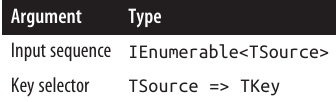
نوع بازگشتی = IOrderedEnumerable<TSource>
🔹 آرگومانهای ThenBy و ThenByDescending
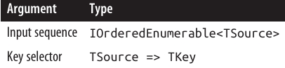
📑 نحوۀ Query (Query syntax)
orderby expression1 [descending] [, expression2 [descending] ... ]
📖 مرور کلی (Overview)
- OrderBy نسخهای مرتبشده از توالی ورودی را برمیگرداند و از keySelector برای مقایسه استفاده میکند.
- مثال: تولید یک توالی از نامها به ترتیب حروف الفبا:
IEnumerable<string> query = names.OrderBy(s => s);
- مرتبسازی بر اساس طول نام:
IEnumerable<string> query = names.OrderBy(s => s.Length);
// نتیجه: { "Jay", "Tom", "Mary", "Dick", "Harry" };
- ترتیب نسبی عناصری که کلید مرتبسازی یکسان دارند (مثل Jay/Tom و Mary/Dick) مشخص نیست—مگر اینکه ThenBy اضافه کنید:
IEnumerable<string> query = names.OrderBy(s => s.Length).ThenBy(s => s);
// نتیجه: { "Jay", "Tom", "Dick", "Mary", "Harry" };
- ThenBy تنها عناصر با همان کلید مرتبسازی قبلی را دوباره مرتب میکند.
- میتوانید هر تعداد ThenBy را زنجیرهای استفاده کنید. مثال: ابتدا بر اساس طول، سپس کاراکتر دوم، و در نهایت کاراکتر اول:
names.OrderBy(s => s.Length).ThenBy(s => s[1]).ThenBy(s => s[0]);
🔄 معادل در نحوۀ Query
from s in names
orderby s.Length, s[1], s[0]
select s;
⚠️ نمونه اشتباه: این در واقع ابتدا بر اساس s[1] و سپس s.Length مرتب میکند (یا در کوئری پایگاه داده فقط بر اساس s[1] مرتب میکند و ترتیب قبلی را نادیده میگیرد):
from s in names
orderby s.Length
orderby s[1]
...
🔽 OrderByDescending و ThenByDescending
این اپراتورها همان کارهای قبلی را انجام میدهند اما خروجی را به ترتیب معکوس میدهند.
مثال EF Core: بازیابی خریدها بر اساس قیمت نزولی و در صورت برابر بودن قیمت، به ترتیب الفبایی:
dbContext.Purchases
.OrderByDescending(p => p.Price)
.ThenBy(p => p.Description);
معادل در نحوۀ Query:
from p in dbContext.Purchases
orderby p.Price descending, p.Description
select p;
📚 Comparers و Collations
- در یک کوئری محلی (local query)، خودِ اشیاء انتخابشده توسط key selector الگوریتم مرتبسازی را از طریق پیادهسازی پیشفرض IComparable تعیین میکنند (رجوع کنید به فصل ۷).
- شما میتوانید الگوریتم مرتبسازی را با ارسال یک شیء IComparer بازنویسی کنید. مثال: مرتبسازی غیرحساس به حروف بزرگ/کوچک:
names.OrderBy(n => n, StringComparer.CurrentCultureIgnoreCase);
- ارسال comparer در نحوۀ Query یا توسط EF Core پشتیبانی نمیشود.
- هنگام کوئری زدن روی پایگاه داده، الگوریتم مقایسه توسط Collation ستون مربوطه تعیین میشود.
- اگر Collation حساس به حروف باشد، میتوانید مرتبسازی غیرحساس به حروف بزرگ/کوچک را با فراخوانی
ToUpperدر key selector انجام دهید:
from p in dbContext.Purchases
orderby p.Description.ToUpper()
select p;
🔹 IOrderedEnumerable و IOrderedQueryable
-
اپراتورهای مرتبسازی، زیرنوعهای خاصی از
IEnumerable<T>را برمیگردانند:- در Enumerable →
IOrderedEnumerable<TSource> - در Queryable →
IOrderedQueryable<TSource>
- در Enumerable →
-
این زیرنوعها اجازه میدهند که اپراتور ThenBy، ترتیب موجود را تکمیل کند و جایگزین نکند.
-
اعضای اضافی این زیرنوعها بهصورت عمومی نمایان نیستند و شبیه توالیهای عادی عمل میکنند.
🔹 مثال: ساخت کوئری مرحلهای
IOrderedEnumerable<string> query1 = names.OrderBy(s => s.Length);
IOrderedEnumerable<string> query2 = query1.ThenBy(s => s);
⚠️ اگر query1 از نوع IEnumerable<string> تعریف شود، خط دوم کامپایل نمیشود—چون ThenBy به ورودی از نوع IOrderedEnumerable<string> نیاز دارد.
🔹 استفاده از تایپ ضمنی (Implicit Typing)
var query1 = names.OrderBy(s => s.Length);
var query2 = query1.ThenBy(s => s);
- تایپ ضمنی راحتی دارد اما میتواند مشکلاتی ایجاد کند:
var query = names.OrderBy(s => s.Length);
query = query.Where(n => n.Length > 3); // خطای زمان کامپایل
- کامپایلر
queryرا از نوعIOrderedEnumerable<string>استنتاج میکند، اماWhereیکIEnumerable<string>برمیگرداند که نمیتوان آن را دوباره بهqueryاختصاص داد.
✅ راهحلها:
- استفاده از تایپ صریح
- یا فراخوانی
AsEnumerable()بعد ازOrderBy:
var query = names.OrderBy(s => s.Length).AsEnumerable();
query = query.Where(n => n.Length > 3); // درست
- معادل در کوئریهای interpreted، فراخوانی
AsQueryable()است.
Grouping
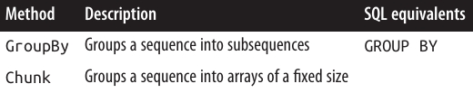
📚 GroupBy
IEnumerable<TSource> → IEnumerable<IGrouping<TKey, TElement>>

📑 GroupBy
IEnumerable<TSource> → IEnumerable<IGrouping<TKey, TElement>>
🔍 نحوۀ Query (Query syntax)
group element-expression by key-expression
📖 مرور کلی (Overview)
- GroupBy یک توالی صاف (flat) را به توالیای از گروهها تبدیل میکند.
- مثال: گروهبندی تمام فایلهای موجود در
Path.GetTempPath()بر اساس پسوند:
string[] files = Directory.GetFiles(Path.GetTempPath());
IEnumerable<IGrouping<string, string>> query =
files.GroupBy(file => Path.GetExtension(file));
- یا با تایپ ضمنی:
var query = files.GroupBy(file => Path.GetExtension(file));
🔹 پیمایش نتایج
foreach (IGrouping<string, string> grouping in query)
{
Console.WriteLine("Extension: " + grouping.Key);
foreach (string filename in grouping)
Console.WriteLine(" - " + filename);
}
📋 خروجی نمونه:
Extension: .pdf
-- chapter03.pdf
-- chapter04.pdf
Extension: .doc
-- todo.doc
-- menu.doc
-- Copy of menu.doc
🛠 پیادهسازی داخلی
Enumerable.GroupByعناصر ورودی را داخل یک دیکشنری موقت از لیستها میخواند تا همه عناصر با کلید مشابه در یک زیرلیست قرار گیرند.- سپس یک توالی از groupingها را تولید میکند.
- Grouping یک توالی است که دارای Key میباشد:
public interface IGrouping<TKey, TElement> : IEnumerable<TElement>, IEnumerable
{
TKey Key { get; } // کلید اعمال شده روی زیرتوالی بهصورت کلی
}
- به طور پیشفرض، عناصر هر گروه همان عناصر ورودی هستند مگر اینکه elementSelector مشخص کنید.
- مثال: تبدیل عناصر ورودی به حروف بزرگ:
files.GroupBy(file => Path.GetExtension(file), file => file.ToUpper());
- در این حالت، Key هر گروه هنوز در حالت اصلی خود باقی میماند.
📋 خروجی نمونه:
Extension: .pdf
-- CHAPTER03.PDF
-- CHAPTER04.PDF
Extension: .doc
-- TODO.DOC
⚠️ نکات مهم
- زیرمجموعهها بر اساس کلید به ترتیب الفبا صادر نمیشوند. GroupBy تنها گروهبندی میکند و مرتبسازی انجام نمیدهد.
- برای مرتبسازی، باید از OrderBy استفاده کنید:
files.GroupBy(file => Path.GetExtension(file), file => file.ToUpper())
.OrderBy(grouping => grouping.Key);
🔹 معادل در نحوۀ Query
group element-expr by key-expr
مثال:
from file in files
group file.ToUpper() by Path.GetExtension(file);
- مشابه select،
groupیک کوئری را پایان میدهد مگر اینکه query continuation clause اضافه کنید:
from file in files
group file.ToUpper() by Path.GetExtension(file) into grouping
orderby grouping.Key
select grouping;
🔹 ادامهی کوئریها (Query Continuations)
- ادامهی کوئری پس از group by مفید است، مثلاً فیلتر کردن گروههایی که کمتر از پنج فایل دارند:
from file in files
group file.ToUpper() by Path.GetExtension(file) into grouping
where grouping.Count() >= 5
select grouping;
- یک
whereپس ازgroup byمعادل HAVING در SQL است. - این شرط روی کل زیرتوالی یا گروه اعمال میشود، نه روی عناصر فردی.
🔹 مثال Aggregation
- گاهی تنها به نتیجهی تجمیع روی گروهها نیاز دارید و میتوانید زیرتوالیها را نادیده بگیرید:
string[] votes = { "Dogs", "Cats", "Cats", "Dogs", "Dogs" };
IEnumerable<string> query = from vote in votes
group vote by vote into g
orderby g.Count() descending
select g.Key;
string winner = query.First(); // Dogs
📑 GroupBy در EF Core
- گروهبندی در EF Core به همان شکل روی پایگاه داده عمل میکند.
- اگر navigation propertyها را تنظیم کرده باشید، اغلب نیازی به گروهبندی کمتر از حالت استاندارد SQL پیش میآید.
مثال: انتخاب مشتریانی که حداقل دو خرید داشتهاند بدون نیاز به گروهبندی:
from c in dbContext.Customers
where c.Purchases.Count >= 2
select c.Name + " has made " + c.Purchases.Count + " purchases";
- نمونهای که نیاز به گروهبندی دارد: محاسبه کل فروشها بر اساس سال:
from p in dbContext.Purchases
group p.Price by p.Date.Year into salesByYear
select new {
Year = salesByYear.Key,
TotalValue = salesByYear.Sum()
};
- GroupBy در LINQ از GROUP BY در SQL قدرتمندتر است، زیرا میتوانید همه ردیفها را بدون هیچ تجمیعی بازیابی کنید:
from p in dbContext.Purchases
group p by p.Date.Year
⚠️ این روش در EF Core کار نمیکند.
راهحل ساده: قبل از گروهبندی .AsEnumerable() فراخوانی کنید تا گروهبندی روی کلاینت انجام شود.
-
این روش تا زمانی که فیلترینگ قبل از گروهبندی انجام شود، کارآمد است، زیرا فقط دادههای مورد نیاز از سرور فراخوانی میشوند.
-
تفاوت دیگر با SQL: الزامی به پروجکت کردن متغیرها یا عبارات استفادهشده در گروهبندی یا مرتبسازی وجود ندارد.
🔹 گروهبندی با چند کلید
- میتوانید با استفاده از composite key و anonymous type گروهبندی کنید:
from n in names
group n by new { FirstLetter = n[0], Length = n.Length };
🔹 مقایسهکنندههای سفارشی (Custom equality comparers)
- میتوانید یک equality comparer سفارشی به GroupBy بدهید تا الگوریتم مقایسهی کلید تغییر کند.
- به ندرت لازم است، زیرا تغییر عبارت key selector معمولاً کافی است.
- مثال: گروهبندی غیرحساس به حروف بزرگ/کوچک:
group n by n.ToUpper()
📑 Chunk
IEnumerable<TSource> → IEnumerable<TElement[]>
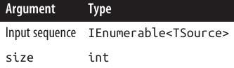
📦 Chunk
- معرفیشده در .NET 6، Chunk یک توالی را به بلوکهایی (chunks) با اندازهی مشخص تقسیم میکند (یا کمتر، اگر عناصر کافی نباشند):
foreach (int[] chunk in new[] { 1, 2, 3, 4, 5, 6, 7, 8 }.Chunk(3))
Console.WriteLine(string.Join(", ", chunk));
خروجی:
1, 2, 3
4, 5, 6
7, 8
🔗 Set Operators
IEnumerable<TSource>, IEnumerable<TSource> → IEnumerable<TSource>
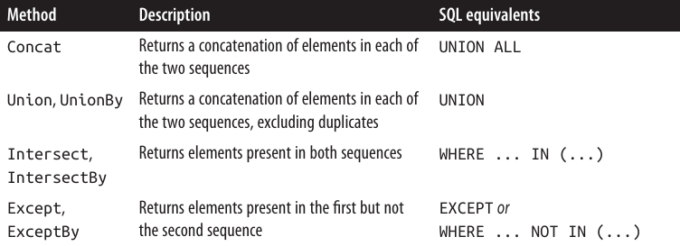
🔗 Concat, Union, UnionBy
- Concat همه عناصر توالی اول را بازمیگرداند، سپس همه عناصر توالی دوم را اضافه میکند.
- Union همان کار را میکند اما تکراریها را حذف میکند:
int[] seq1 = { 1, 2, 3 }, seq2 = { 3, 4, 5 };
IEnumerable<int>
concat = seq1.Concat(seq2), // { 1, 2, 3, 3, 4, 5 }
union = seq1.Union(seq2); // { 1, 2, 3, 4, 5 }
- مشخص کردن نوع آرگومان مفید است وقتی توالیها نوع متفاوتی دارند ولی عناصر یک base type مشترک دارند.
- مثال با API بازتاب (Reflection API): متدها و پراپرتیها با کلاسهای
MethodInfoوPropertyInfoنمایش داده میشوند که یک کلاس پایه مشترک به نامMemberInfoدارند.
MethodInfo[] methods = typeof(string).GetMethods();
PropertyInfo[] props = typeof(string).GetProperties();
IEnumerable<MemberInfo> both = methods.Concat<MemberInfo>(props);
- مثال دیگر: فیلتر کردن متدها قبل از الحاق:
var methods = typeof(string).GetMethods().Where(m => !m.IsSpecialName);
var props = typeof(string).GetProperties();
var both = methods.Concat<MemberInfo>(props);
-
این مثال به interface type parameter variance وابسته است:
methodsاز نوعIEnumerable<MethodInfo>است و نیاز به تبدیل covariant بهIEnumerable<MemberInfo>دارد. -
UnionBy (معرفی شده در .NET 6) یک keySelector میگیرد که برای تعیین تکراری بودن عناصر استفاده میشود. مثال: union غیر حساس به حروف بزرگ/کوچک:
string[] seq1 = { "A", "b", "C" };
string[] seq2 = { "a", "B", "c" };
var union = seq1.UnionBy(seq2, x => x.ToUpperInvariant());
// union is { "A", "b", "C" }
- این کار با Union هم قابل انجام است اگر یک equality comparer بدهیم:
var union = seq1.Union(seq2, StringComparer.InvariantCultureIgnoreCase);
🔹 Intersect, IntersectBy, Except, ExceptBy
- Intersect عناصر مشترک بین دو توالی را بازمیگرداند.
- Except عناصر توالی اول که در توالی دوم نیستند را بازمیگرداند:
int[] seq1 = { 1, 2, 3 }, seq2 = { 3, 4, 5 };
IEnumerable<int>
commonality = seq1.Intersect(seq2), // { 3 }
difference1 = seq1.Except(seq2), // { 1, 2 }
difference2 = seq2.Except(seq1); // { 4, 5 }
- پیادهسازی داخلی Enumerable.Except: تمام عناصر توالی اول در یک دیکشنری بارگذاری میشوند، سپس تمام عناصر موجود در توالی دوم از دیکشنری حذف میشوند.
- معادل در SQL:
SELECT number FROM numbers1Table
WHERE number NOT IN (SELECT number FROM numbers2Table)
- IntersectBy و ExceptBy (از .NET 6) اجازه میدهند یک key selector مشخص کنید که قبل از مقایسه تساوی اعمال میشود (مشابه UnionBy).
🔹 Conversion Methods
- LINQ عمدتاً با توالیها کار میکند (
IEnumerable<T>). - Conversion methods برای تبدیل به و از انواع دیگر مجموعهها استفاده میشوند.
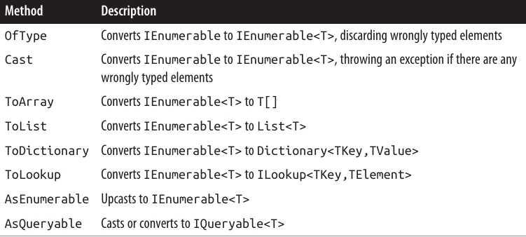
🔄 OfType و Cast
- OfType و Cast یک مجموعه غیرجنریک (
IEnumerable) را میگیرند و یک توالی جنریک (IEnumerable<T>) بازمیگردانند که میتوانید روی آن عملیات LINQ انجام دهید:
ArrayList classicList = new ArrayList(); // در System.Collections
classicList.AddRange(new int[] { 3, 4, 5 });
IEnumerable<int> sequence1 = classicList.Cast<int>();
-
تفاوت Cast و OfType زمانی است که با عنصری ناسازگار مواجه میشوند:
- Cast: خطا میدهد.
- OfType: عنصر ناسازگار را نادیده میگیرد.
ادامه مثال بالا:
DateTime offender = DateTime.Now;
classicList.Add(offender);
IEnumerable<int>
sequence2 = classicList.OfType<int>(), // OK - عنصر DateTime نادیده گرفته میشود
sequence3 = classicList.Cast<int>(); // استثناء میدهد
- قوانین سازگاری عناصر دقیقاً مطابق is operator در C# است و تنها reference conversion و unboxing conversion را در نظر میگیرد.
پیادهسازی داخلی OfType:
public static IEnumerable<TSource> OfType<TSource>(IEnumerable source)
{
foreach (object element in source)
if (element is TSource)
yield return (TSource)element;
}
پیادهسازی Cast مشابه است ولی تست سازگاری نوع را انجام نمیدهد:
public static IEnumerable<TSource> Cast<TSource>(IEnumerable source)
{
foreach (object element in source)
yield return (TSource)element;
}
- نتیجه: نمیتوانید از Cast برای تبدیلهای عددی یا سفارشی استفاده کنید. برای این کار باید از Select استفاده کنید.
مثال:
int[] integers = { 1, 2, 3 };
IEnumerable<long> test1 = integers.OfType<long>(); // صفر عنصر
IEnumerable<long> test2 = integers.Cast<long>(); // استثناء میدهد
-
دلیل:
- در OfType:
(element is long)برای int همیشه false است. - در Cast: وقتی
TSourceیک value type است، CLR آن را unboxing فرض میکند، که نیاز به تطابق دقیق نوع دارد، پس خطا رخ میدهد.
- در OfType:
راهحل: استفاده از Select:
IEnumerable<long> castLong = integers.Select(s => (long)s);
-
OfType و Cast برای downcasting عناصر در یک توالی جنریک نیز مفید هستند. مثال:
- اگر توالی شما
IEnumerable<Fruit>باشد،OfType<Apple>فقط سیبها را بازمیگرداند. - کاربرد ویژه در LINQ to XML دارد (فصل ۱۰).
- اگر توالی شما
-
Cast از query syntax نیز پشتیبانی میکند: کافیست نوع را قبل از متغیر محدوده مشخص کنید:
from TreeNode node in myTreeView.Nodes
...
🟢 ToArray, ToList, ToDictionary, ToHashSet, ToLookup
- ToArray, ToList, و ToHashSet نتایج را در یک array، List
یا HashSet قرار میدهند. - اجرای آنها موجب enumeration فوری توالی ورودی میشود (مراجعه کنید به “Deferred Execution”، صفحه ۴۳۲).
- ToDictionary و ToLookup آرگومانهای زیر را میپذیرند:

🟡 ToDictionary و ToLookup
- ToDictionary نیز اجرای فوری (immediate execution) توالی را مجبور میکند و نتایج را در یک Dictionary<TK, TV> قرار میدهد.
- keySelector ارائهشده باید برای هر عنصر مقدار منحصر به فرد تولید کند، در غیر این صورت استثناء رخ میدهد.
- در مقابل، ToLookup اجازه میدهد چندین عنصر با همان کلید وجود داشته باشند.
- برای توضیحات بیشتر درباره lookups، به بخش “Joining with lookups” صفحه ۴۹۸ مراجعه کنید.
🔹 AsEnumerable و AsQueryable
- AsEnumerable یک توالی را به
IEnumerable<T>upcast میکند و باعث میشود کامپایلر اپراتورهای بعدی را به متدهای Enumerable وصل کند نه Queryable. - مثال: بخش “Combining Interpreted and Local Queries”، صفحه ۴۵۲.
- AsQueryable یک توالی را به
IQueryable<T>downcast میکند اگر اینترفیس را پیادهسازی کند؛ در غیر این صورت، یک wrapperIQueryable<T>روی توالی محلی میسازد.
🔹 Element Operators
IEnumerable<TSource> → TSource
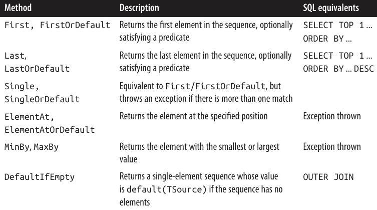
⚡ Methods ending in “OrDefault”
- متدهایی که با OrDefault پایان مییابند، به جای پرتاب exception وقتی توالی ورودی خالی است یا هیچ عنصری با شرط داده شده مطابقت ندارد، مقدار default(TSource) بازمیگردانند.
- مقدار default(TSource) برای انواع مرجع (reference types) برابر
null، برای نوعboolبرابرfalseو برای انواع عددی برابر صفر است.
🔹 First, Last, and Single
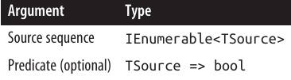
🔹 First و Last
مثال زیر First و Last را نشان میدهد:
int[] numbers = { 1, 2, 3, 4, 5 };
int first = numbers.First(); // 1
int last = numbers.Last(); // 5
int firstEven = numbers.First(n => n % 2 == 0); // 2
int lastEven = numbers.Last(n => n % 2 == 0); // 4
مثال First در مقابل FirstOrDefault:
int firstBigError = numbers.First(n => n > 10); // Exception
int firstBigNumber = numbers.FirstOrDefault(n => n > 10); // 0
🔹 Single و SingleOrDefault
- Single نیاز دارد که دقیقا یک عنصر با شرط داده شده وجود داشته باشد.
- SingleOrDefault اجازه میدهد صفر یا یک عنصر وجود داشته باشد.
مثالها:
int onlyDivBy3 = numbers.Single(n => n % 3 == 0); // 3
int divBy2Err = numbers.Single(n => n % 2 == 0); // خطا: 2 و 4 مطابقت دارند
int singleError = numbers.Single(n => n > 10); // خطا
int noMatches = numbers.SingleOrDefault(n => n > 10); // 0
int divBy2Error = numbers.SingleOrDefault(n => n % 2 == 0); // خطا
-
Single سختگیرترین عضو خانواده element operators است.
-
FirstOrDefault و LastOrDefault بیشترین تحمل را دارند.
-
در EF Core، Single اغلب برای واکشی یک ردیف از جدول بر اساس primary key استفاده میشود:
Customer cust = dataContext.Customers.Single(c => c.ID == 3);
🔹 ElementAt

🔹 ElementAt و ElementAtOrDefault
- ElementAt عنصر nام توالی را برمیگرداند:
int[] numbers = { 1, 2, 3, 4, 5 };
int third = numbers.ElementAt(2); // 3
int tenthError = numbers.ElementAt(9); // Exception
int tenth = numbers.ElementAtOrDefault(9); // 0
- اگر توالی ورودی IList
باشد، ElementAt از indexer آن استفاده میکند؛ در غیر این صورت، n بار شمارش میکند و سپس عنصر بعدی را برمیگرداند. - ElementAt در EF Core پشتیبانی نمیشود.
🔹 MinBy و MaxBy
- معرفیشده در .NET 6، MinBy و MaxBy عنصری با کوچکترین یا بزرگترین مقدار (بر اساس keySelector) را برمیگردانند:
string[] names = { "Tom", "Dick", "Harry", "Mary", "Jay" };
Console.WriteLine(names.MaxBy(n => n.Length)); // Harry
- در مقابل، Min و Max خود مقدار کوچکترین یا بزرگترین را برمیگردانند:
Console.WriteLine(names.Max(n => n.Length)); // 5
- اگر دو یا چند عنصر مقدار حداقل/حداکثر یکسان داشته باشند، MinBy/MaxBy اولین عنصر را بازمیگردانند:
Console.WriteLine(names.MinBy(n => n.Length)); // Tom
- اگر توالی خالی باشد، MinBy و MaxBy مقدار null برمیگردانند اگر نوع عنصر nullable باشد؛ در غیر این صورت استثناء رخ میدهد.
🔹 DefaultIfEmpty
- DefaultIfEmpty توالیای با یک عنصر شامل default(TSource) برمیگرداند اگر توالی ورودی خالی باشد؛ در غیر این صورت توالی ورودی را بدون تغییر بازمیگرداند.
- این متد در نوشتن flat outer joins کاربرد دارد: بخشهای “Outer joins with SelectMany” صفحه ۴۹۱ و “Flat outer joins” صفحه ۴۹۷.
🔹 Aggregation Methods
IEnumerable<TSource> → scalar

🔹 Count و LongCount

- Count به سادگی توالی را شمارش میکند و تعداد عناصر را بازمیگرداند:
int fullCount = new int[] { 5, 6, 7 }.Count(); // 3
-
پیادهسازی داخلی Enumerable.Count بررسی میکند که آیا توالی ورودی ICollection
را پیادهسازی کرده است یا خیر. - اگر پیادهسازی شده باشد، مستقیماً از ICollection
.Count استفاده میکند. - در غیر این صورت، هر عنصر را شمارش میکند و یک شمارنده را افزایش میدهد.
- اگر پیادهسازی شده باشد، مستقیماً از ICollection
-
میتوان یک predicate هم ارائه داد تا فقط عناصر مطابق شرط شمارش شوند:
int digitCount = "pa55w0rd".Count(c => char.IsDigit(c)); // 3
- LongCount همان کار Count را انجام میدهد اما نتیجه را به صورت int64 (long) برمیگرداند و مناسب توالیهایی با بیش از دو میلیارد عنصر است.
🔹 Min و Max
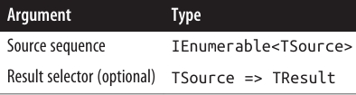
- Min و Max کوچکترین یا بزرگترین عنصر یک توالی را برمیگردانند:
int[] numbers = { 28, 32, 14 };
int smallest = numbers.Min(); // 14
int largest = numbers.Max(); // 32
- اگر یک selector ارائه دهید، هر عنصر ابتدا به صورت دلخواه تبدیل میشود و سپس مقایسه انجام میشود:
int smallestMod = numbers.Max(n => n % 10); // 8
- اگر عناصر خودشان قابل مقایسه نباشند (IComparable
پیادهسازی نکرده باشند)، ارائه selector الزامی است:
Purchase runtimeError = dbContext.Purchases.Min(); // خطا
decimal? lowestPrice = dbContext.Purchases.Min(p => p.Price); // صحیح
- Selector تعیین میکند که چگونه عناصر مقایسه شوند و همچنین نوع نتیجه نهایی چیست. در مثال بالا، نتیجه نهایی decimal است نه شیء Purchase.
- برای به دست آوردن ارزانترین خرید، باید از subquery استفاده کنید:
Purchase cheapest = dbContext.Purchases
.Where(p => p.Price == dbContext.Purchases.Min(p2 => p2.Price))
.FirstOrDefault();
- در این حالت میتوان بدون استفاده از تجمیع (aggregation) نیز پرسوجو را با OrderBy و سپس FirstOrDefault نوشت.
🔹 Sum و Average
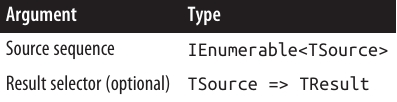
- Sum و Average اپراتورهای تجمیعی (aggregation) هستند و به شکلی مشابه با Min و Max استفاده میشوند:
decimal[] numbers = { 3, 4, 8 };
decimal sumTotal = numbers.Sum(); // 15
decimal average = numbers.Average(); // 5 (میانگین)
- مثال دیگر: مجموع طول رشتهها در آرایه names:
int combinedLength = names.Sum(s => s.Length); // 19
- Sum و Average محدودیتهایی در نوع داده دارند و فقط برای انواع عددی (int, long, float, double, decimal و نسخه nullable آنها) تعریف شدهاند.
- در مقابل، Min و Max میتوانند روی هر چیزی که IComparable
را پیادهسازی کرده باشد، مانند رشتهها، عمل کنند. - همچنین، Average همیشه نتیجهای از نوع decimal، float یا double برمیگرداند، مطابق جدول زیر:

🔹 Aggregate و مسائل مرتبط
- Average بهطور ضمنی مقادیر ورودی را ارتقا میدهد تا از دست رفتن دقت جلوگیری شود. به همین دلیل مثال زیر کامپایل نمیشود:
int avg = new int[] { 3, 4 }.Average(); // خطا: cannot convert double to int
- اما این نمونه کامپایل میشود:
double avg = new int[] { 3, 4 }.Average(); // 3.5
- اگر نیاز باشد، میتوانیم عنصر ورودی را به صراحت تبدیل کنیم:
double avg = numbers.Average(n => (double)n);
- هنگام کوئری زدن به پایگاه داده، Sum و Average به عملیات تجمیعی استاندارد SQL ترجمه میشوند. مثال:
from c in dbContext.Customers
where c.Purchases.Average(p => p.Price) > 500
select c.Name;
🔹 Aggregate
- Aggregate اجازه میدهد الگوریتم تجمیع سفارشی خود را پیادهسازی کنید. این متد در EF Core پشتیبانی نمیشود و کاربرد آن در موارد خاص است. مثال مشابه با Sum:
int[] numbers = { 1, 2, 3 };
int sum = numbers.Aggregate(0, (total, n) => total + n); // 6
-
پارامتر اول (seed) نقطه شروع تجمیع است و پارامتر دوم الگوریتم بهروزرسانی مقدار تجمعی با دریافت هر عنصر جدید است.
-
میتوان پارامتر سوم را هم ارائه داد تا نتیجه نهایی از مقدار تجمعی استخراج شود.
-
اکثر موارد استفاده Aggregate میتوانند با یک حلقه foreach ساده حل شوند، اما مزیت Aggregate در عملیاتهای پیچیده یا بزرگ این است که با PLINQ میتوان بهصورت موازی اجرا کرد.
🔹 تجمیع بدون Seed
- میتوان seed را حذف کرد. در این حالت، عنصر اول بهصورت ضمنی seed شده و تجمیع از عنصر دوم آغاز میشود:
int[] numbers = { 1, 2, 3 };
int sum = numbers.Aggregate((total, n) => total + n); // 6
- مثال دیگر با ضرب:
int[] numbers = { 1, 2, 3 };
int x = numbers.Aggregate(0, (prod, n) => prod * n); // 0*1*2*3 = 0
int y = numbers.Aggregate((prod, n) => prod * n); // 1*2*3 = 6
- تجمیع بدون seed مزیت اجرای موازی بدون overload خاص را دارد، اما نکات خطرناکی نیز دارد.
⚠️ مشکلات تجمیع بدون Seed
- توابع غیر جابجایی و غیر ترکیبی (non-commutative / non-associative) میتوانند نتایج غیرمنتظره یا غیرقطعی تولید کنند.
- مثال:
int[] numbers = { 2, 3, 4 };
int sum = numbers.Aggregate((total, n) => total + n * n); // 27
-
به جای محاسبه صحیح ۲۲ + ۳۳ + ۴*۴ = ۲۹، مقدار ۲۷ محاسبه شد.
-
راه حلها:
- تبدیل به تجمیع با seed:
int[] numbers = { 0, 2, 3, 4 };
- بازنویسی تابع تجمیع به صورت جابجایی و ترکیبی:
int sum = numbers.Select(n => n * n).Aggregate((total, n) => total + n);
- در سناریوهای ساده، بهتر است از Sum و Average استفاده شود. مثال محاسبه Root-Mean-Square:
Math.Sqrt(numbers.Average(n => n * n));
- مثال محاسبه انحراف معیار:
double mean = numbers.Average();
double sdev = Math.Sqrt(numbers.Average(n => {
double dif = n - mean;
return dif * dif;
}));
- این روشها ایمن، کارآمد و کاملاً موازیپذیر هستند.
🔹 Quantifiers
IEnumerable<TSource> → bool
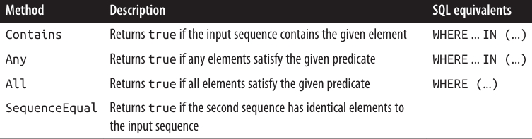
🔹 Contains و Any
- متد Contains یک عنصر از نوع
TSourceمیپذیرد و بررسی میکند آیا آن عنصر در توالی وجود دارد یا خیر. - متد Any یک شرط اختیاری (predicate) میگیرد و بررسی میکند آیا حداقل یک عنصر با شرط دادهشده وجود دارد یا خیر.
مثالها:
bool hasAThree = new int[] { 2, 3, 4 }.Contains(3); // true
bool hasAThree = new int[] { 2, 3, 4 }.Any(n => n == 3); // true
- Any میتواند همهی کارهایی که Contains انجام میدهد را انجام دهد و حتی بیشتر:
bool hasABigNumber = new int[] { 2, 3, 4 }.Any(n => n > 10); // false
- فراخوانی Any بدون شرط، بررسی میکند که آیا توالی حداقل یک عنصر دارد یا خیر:
bool hasABigNumber = new int[] { 2, 3, 4 }.Where(n => n > 10).Any();
- Any در زیرکوئریها و کوئریهای پایگاه داده بسیار مفید است. مثال:
from c in dbContext.Customers
where c.Purchases.Any(p => p.Price > 1000)
select c
🔹 All و SequenceEqual
- All بررسی میکند که آیا همه عناصر شرط دادهشده را رعایت میکنند یا خیر. مثال:
dbContext.Customers.Where(c => c.Purchases.All(p => p.Price < 100));
- SequenceEqual دو توالی را با هم مقایسه میکند. برای بازگرداندن
true، هر دو توالی باید عناصر یکسان و با همان ترتیب داشته باشند. میتوان از equality comparer دلخواه استفاده کرد؛ پیشفرضEqualityComparer<T>.Defaultاست.
🔹 Generation Methods
void → IEnumerable<TResult>

🔹 Empty, Repeat و Range
متدهای Empty، Repeat و Range متدهای ایستا (static) هستند و توالیهای ساده محلی را تولید میکنند.
🔹 Empty
متد Empty یک توالی خالی تولید میکند و تنها نیاز به نوع داده دارد:
foreach (string s in Enumerable.Empty<string>())
Console.Write(s); // <چیزی نمایش داده نمیشود>
در ترکیب با عملگر ??، Empty عکس DefaultIfEmpty عمل میکند.
مثال: فرض کنید یک آرایهی jagged از اعداد صحیح داریم و میخواهیم همهی اعداد را در یک لیست صاف جمع کنیم. کوئری SelectMany زیر در صورت وجود آرایهی null داخلی با خطا مواجه میشود:
int[][] numbers =
{
new int[] { 1, 2, 3 },
new int[] { 4, 5, 6 },
null // این null باعث شکست کوئری میشود
};
IEnumerable<int> flat = numbers.SelectMany(innerArray => innerArray);
استفاده از Empty همراه با ?? مشکل را حل میکند:
IEnumerable<int> flat = numbers
.SelectMany(innerArray => innerArray ?? Enumerable.Empty<int>());
foreach (int i in flat)
Console.Write(i + " "); // 1 2 3 4 5 6
🔹 Range و Repeat
- Range: یک مقدار شروع و تعداد عناصر (هر دو از نوع
int) میگیرد و توالی تولید میکند:
foreach (int i in Enumerable.Range(5, 3))
Console.Write(i + " "); // 5 6 7
- Repeat: عنصری برای تکرار و تعداد دفعات تکرار آن را میگیرد:
foreach (bool x in Enumerable.Repeat(true, 3))
Console.Write(x + " "); // True True True